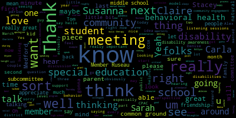
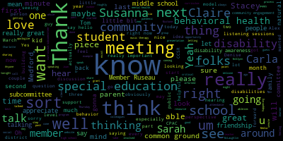

total time: 33.48 minutes
total words: 5575

{kind=link}
total time: 3.94 minutes
total words: 595
{kind=link}
total time: 2.76 minutes
total words: 481

total time: 2.15 minutes
total words: 294

[McLaughlin]: 5.02 PM. Thursday, February 11. Welcome to the Special Education Behavioral Health Subcommittee of the Medford Public School. I am going to read our usual. So bear with me one minute.
[Unidentified]: Okay.
[McLaughlin]: First, I should take attendance, actually. Member Mustone? What did she go? Oh, she left. I mean, sorry, I wasn't looking. I was trying to find our itinerary. So, all right, we'll just wait a second. Member Ruseau?
[Ruseau]: Here.
[McLaughlin]: I didn't hear you. Can you?
[Ruseau]: Yes, here.
[McLaughlin]: Oh, wait a minute. Maybe I'm turned down. Sorry, I was. My volume was down. I was just taking attendance. Member Mustone? hear you. Yes, number McLaughlin present three present we have a quorum. Again, welcome to the behavioral health special education. I mean, special education behavioral health subcommittee. It's 504pm. Please be advised that on Thursday, February 11, from five to 630, there'll be a behavioral health and special ed subcommittee meeting held through remote participation via Zoom. The purpose of this meeting is to address best practices and policies for creating trauma-informed schools, behavioral health, and building community and school-based friendships for students with disabilities, special education. Pursuant to Governor Baker's March 12, 2020 order suspending certain provisions of the open meeting law, and Governor's March 15, 2020 order imposing strict limitations on the number of people that may gather in one place. This meeting of the Medford School Committee will be conducted via remote participation to the greatest extent possible. Specific information and the general guidelines for remote participation by members of the public and our parties with the right and or requirement to attend this meeting can be found on the City of Medford website. at medfordma.org. For this meeting, members of the public who wish to listen or watch the meeting may do so by accessing the meeting link contained herein. No in-person attendance of members of the public will be permitted, but every effort will be made to ensure that the public can adequately access the proceedings in real time via technological means. In the event that we are unable to do so, despite best efforts, we will post on the City of Medford or Medford Community Media website audio or video recording, transcript or other comprehensive recording of proceedings as soon as possible after the meeting. The meeting can be viewed through Medford Community Media on Comcast channel 22 and Verizon channel 43 at 5 o'clock p.m. So if additionally any questions or comments can be submitted during the meeting by emailing Melanie McLaughlin at medfordk12ma.ma.us. Those submitting must include the following information, your first and last name, Medford Street address, and your question or comment. Where our agenda is, we'll do a brief welcome and introduction to folks from roughly 5 to 545. We'll discuss where we're at with our special education, process of informing friendships for students with disabilities in our community and schools with an eye towards likely an end of April, early May report out to the committee of the whole and roughly 545 to 630 for behavioral health trauma informed schools. Our next meeting is Thursday, March 18th. These meetings come up quicker than I realized, to be honest with you. And I, you know, I think, you know, I tend to. get a whole bunch of things done in the interim, and then the meeting's here, and it feels like it's already on our shoulders. So I don't necessarily think we'll go the entire meeting tonight, but I could be wrong. So I just wanted to start, I guess, with special education, because we started with behavioral health last time. Special education, we are working on friendships and community in school. And if you were able, I apologize for getting the last month's minutes out to you all so late today. As I was saying, for those who just joined, I just got a new baby puppy who's like three pounds and eight weeks old. So it's literally like a baby mommy day thing going on. So I apologize. We've been preparing for that. So my apologies. Next time I will get them out to you sooner. So there are a couple of things that happened in the last, between our last meeting and now. We had Charlotte Heim, who's here. Actually, since we have a minute or two, maybe folks wouldn't mind introducing themselves. I know some of you know each other, but I'll just call on you to introduce yourself so that people don't have to guess who's first. Charlotte, if you wouldn't mind just introducing yourself and letting folks know what your role is. Are you able to unmute? All right, let me see. Can I unmute? Yeah, ask to unmute.
[Cushing]: Member McLaughlin, I actually just created it so that anyone can unmute themselves for the time being for this purpose.
[6ToLK-34czQ_SPEAKER_12]: Thank you. Thank you, Dr. Cushing. Charlotte Heim, high school OT and occupational therapist and transition specialist. Thank you, Charlotte. Denise?
[McLaughlin]: Denise Desjardins?
[USzVwzD0IPY_SPEAKER_11]: a system-wide physical therapist. Yes, so I'm the system-wide physical therapist at all schools except the Brooks. And in conjunction with some of the elementary and middle school staff, we've sort of laid some of the seed work for what Melanie has been talking about.
[McLaughlin]: What our subcommittee has been talking about. Thank you so much, Denise. I'm excited for you to give us an update on that as well. We'll talk more. Susanna?
[Campbell]: Hello, I'm Susanna Campbell, and I'm the coordinator of speech language hearing services for the district.
[McLaughlin]: Thank you, Carla.
[o3BqzLm3DbU_SPEAKER_10]: Hi, Carla Andre, and I'm a special education teacher at Medford High School.
[McLaughlin]: Tanya, do you want to say hello?
[Tanya Sullivan]: Hi, yes, Tanya Sullivan, co chair of the Medford CPAC. I'll be putting my camera on in a little while, but just trying to wrap up dinner here. Alex.
[Alexandra Lauric]: Yes, I'm Alex Loric. I'm the co-chair of the CPAC. And I'm making math materials for my son. So when I'm listening, I pay attention.
[McLaughlin]: Thank you. Let's see. Dr. Cushing, do you want to say hello?
[Cushing]: Hello everyone. So good to see everyone here. I'm the assistant superintendent for secondary education and here to help out in any way possible.
[McLaughlin]: Thank you. And Ms. Galussi.
[Galusi]: Hello. Hi, Suzanne Galussi, newly assistant superintendent of elementary education and likewise very collaborative by nature. So please reach out if I can do anything to assist.
[McLaughlin]: Thank you.
[Galusi]: Lisa Evangelista.
[McLaughlin]: Let me see.
[Evangelista]: Why don't you say hi? Hi everybody. I work with the superintendents, plural and Susie. Um, Melanie, what kind of dog?
[McLaughlin]: Oh, Labradoodle, a little girl. We named her Delilah. She's so pretty little sweetness.
[Evangelista]: My sister got a lab in October and she's growing in leaps and bounds.
[McLaughlin]: I know. I'm telling you. Thank you, Lisa. And we have Claire. Claire, do you want to say hello? Sure.
[SPEAKER_12]: Hi. My name is Claire Flaherty. I'm president of the McGlynn PTO. So I have an eighth grader, and I have a second grader at the Columbus who is my special needs kid.
[McLaughlin]: Thanks for joining us, Claire. And we have Joan Bowen. Joan, would you like to just?
[Bowen]: Good evening, I'm Joan Bowen, I'm Director of Pupil Services for Medford Public Schools. Nice to see everyone tonight. And Dr. Edouard Vincent.
[Edouard-Vincent]: Good evening, everyone. Dr. Edouard Vincent, Superintendent of Schools, glad to be here tonight.
[McLaughlin]: Thank you all for joining us. I know that you have back-to-back meetings constantly, so I appreciate it. So we've done a couple of things from, oh, I'm sorry, Paul and Mia, excuse me, Member Ruseau?
[Ruseau]: Hello, everybody. Paul Russo, Medford School Committee, and parent of these two who apparently don't know I'm in a meeting.
[McLaughlin]: My apologies, Member Ruseau and Member Mustone. Mia? So me, member Mastone and member Ruseau are school committee members on the behavioral health special education subcommittee and colleagues in this work. Thank you all for being here. And so what we have worked on from between the last meeting and today is a couple of things. One is Charlotte, maybe could you talk a little bit about the EPIC presentation that you had?
[6ToLK-34czQ_SPEAKER_12]: Sure. We had the founder and executive director from Epic Leaders come and speak to the combined common ground club with Michael Skorkars' class, the diversity and community class and Access High School. And he spoke about his program. He spoke about civil rights for disability civil rights. And he also spoke about person first language and choosing language, which was really interesting and informative because that's always evolving too. And also about ableism. Thank you.
[McLaughlin]: And maybe, do you want to share what ableism and person first language is just for folks who may not know? Charlotte, would you mind?
[6ToLK-34czQ_SPEAKER_12]: If you want to, I can. I can. So the person first language is starting with a person, with a disability, you don't start with a disability first. And then it's the conversation has evolved from there too, where once that might be a safe starting place or a more inclusive starting place, but then moving along to identifying an individual as they wish to be identified. So,
[McLaughlin]: Yeah, a lot of times that there was a big sort of person first movement for a while. And then a lot of the folks in the autism community definitely said, you know, they preferred autistic. So it's always good to obviously defer to the person with the disability.
[6ToLK-34czQ_SPEAKER_12]: Thank you, Charlotte. Melanie, you do it so well. Just talk about the ableism. Ableism.
[McLaughlin]: is the, Tom Hare taught me, is the idea that it is better to see than not see, hear than not hear, walk than roll. That's not his quote, it's one of his colleagues that sort of started the idea of ableism, or founded the word, but ableism is essentially believing that it is better to live without a disability than with a disability, so inheriting discrimination against individuals with disabilities. Thank you. I was at that presentation. It was really nice to see. And what a great class Carla and Mr. Skorka have with the common ground. And Epic was a really great organization for them to be part of and listen to. So it was just nice to be able to see that. And what I really liked about my observation anyway, and I'm sure that Mr. Skorka and Carla have extended the invitation to folks here to observe the common ground. was just the natural friendships that exist without having to really be facilitated so much by the adults. And that's really the goal in all of our schools. So it was a good model for being able to start.
[6ToLK-34czQ_SPEAKER_12]: And just to follow up, I received an email from a student today from Mr. Skorka's class that wants to do a project on ableism.
[McLaughlin]: Nice. That's great. Well, I'd love to put them in touch if they want with Dr. Tom Hare, who, you know, he's retired from Harvard now, but he always also taught us disability is natural, that we are all disabled at some point. So again, whether it's by COVID, you know, pregnancy, Alzheimer's, anything, ultimately old age, whatever, we're all disabled at some point. So disability is really natural. And Tom, I know he wouldn't mind me sharing because he's been sharing himself publicly. Tom was actually just diagnosed, he retired last January and he was just diagnosed last month with ALS. So again, disability is natural and Tom, if anybody is, you know, is prepared for a life with disability for the remainder of his life. Um, hard diagnosis for sure, but I'm so glad he's, um, he has a great community surrounding him. So, um, but I'm sure he would love to talk to your student about ableism. So if they're interested, um, Tom's Tom's their guy. So great. I'm in touch. Sure. Sure. Um, and then, um, I was thinking maybe, uh, Uh, Denise, we could talk a little bit if you wouldn't mind, uh, or maybe Carla. You might talk first a little bit about some of the discussion we've been having around the common ground program. I know that we have some folks that are new to this meeting tonight. So maybe you could just orient them to the Common Ground, if you would, and what's been happening at the high school, please.
[o3BqzLm3DbU_SPEAKER_10]: Sure. For anyone who doesn't know, Common Ground is a reversed inclusion class. So we have students come into my classroom, and it's pretty split right now, about five and five. So five students from general ed, five students with a disability. Instead of kind of trying to fit students into You know, maybe an elective for meaningful inclusion, why not just invite them into our world in our classroom and and kind of make it work for us so it's been really successful. Right now we're doing kind of like team building activities, things like that they know each other pretty well because it's been about two years now and Melanie recently we talked about. kind of playing with the idea of getting it to be an actual elective, you know, on a course sheet and opening it up to students who are not just in the CCSR, but really any students. The kids in the CCSR are absolutely amazing, but if we really want to get deep into disability awareness, I think we need to go beyond that, because the students who kind of are aware already and are informed, are the kids that are signing up for it. So it's the students who are not signing up for it that we really want to reach. And that goes for students and staff as well.
[McLaughlin]: Thank you, Carla, for sharing that. And maybe, Susanna, if you wouldn't mind just telling us a little bit where you are in your disability awareness course as well.
[Campbell]: Sure. So actually, Charlotte and Carla Followed me right over here tonight so we had our fifth of five sessions that wrapped up this evening. So, this evening. Individuals worked in breakout rooms to discuss different lesson plans that they have developed around disability awareness at the grade levels that they work with and their roles in the schools. So all the participants, including Charlotte and Carla, came up with the different ways that they would be addressing this within their coursework. So I think that we're in a good place to kind of think about next steps, having just wrapped up that kind of foundational knowledge for people.
[McLaughlin]: That's great. And Susanna, I know that you shared your syllabus with the curriculum subcommittee, but at some point it would be great if you wouldn't mind sharing with our colleagues here, member Ruseau and member Mestone, just so they might have some awareness of the program that you do. Thank you. I would appreciate that.
[Campbell]: I'll put the link into the chat if I'm able to.
[McLaughlin]: OK.
[McLaughlin]: And I want to let folks know if you have questions or you want to interject, please feel free to do so. So Denise, I would love it if you wouldn't mind. So one of the things that we've done, we've had this evolution of this conversation around how to build friendships. with students with disabilities in our community and schools for all the obvious reasons, both related to equity, related to student achievement. Both students with and without disabilities do better academically when they're integrated, as the research has shown, among other things. So that's part of the initiative. And so Common Ground has been a really great model at the high school level. And we have had some parents from the autism support group and also from C pack that had been exploring best buddies and I believe that exploration kit is continuing. But we've also looked within the district to see you know what model currently exist and how may it be expanded or improved upon and common ground is really been that model and so we've had some discussions both with Mister And Ms. Andre, Mr. Skorka, teaches the CCSR. His exact title is escaping me right now. And also general education teacher at the high school. And then Ms. Andre is a teacher, special education teacher at the high school. We have reached out to we were thinking about a pilot model at the elementary school. I mean the middle school as sort of a next natural step and what you know what that might look like. And so I did some initial reaching out to some folks at the middle school that at least the McGlynn that I know I still I have a preliminary email out to both of the principals. at the middle schools to discuss with them a little bit more as well. Staff and people who may be interested at each school, the Andrews and the McGlynn. But Denise Desjardins, who is a physical therapist who introduced herself a little while ago, has talked to some folks at the McGlynn. And I understand, Denise, there's some interest there. Is that right?
[USzVwzD0IPY_SPEAKER_11]: Denise. In fact, Nicole Sylvester may be jumping on. She's caught in traffic. So I mean, certainly every you can't hear me. I'm sorry. Can you hear me?
[McLaughlin]: I can hear you now. Yep.
[USzVwzD0IPY_SPEAKER_11]: No. Okay, sorry. So we've been doing Special Olympics now for probably the past 14 or 15 years where we've partnered with Malden High School in providing a day when students from Medford could participate with their cohorts from other cities. And that's become a yearly thing. Unfortunately, we were not able to do it last year, obviously because of COVID, but it has been something that in the past, Melanie and I spoke about sort of Medford becoming more involved with, because Malden was certainly happy to kind of share some of the load. because they put a lot of effort and a lot of time into it, Special Olympics. So that's kind of where we started last year. That's one area. As far as the common ground thing is considered, at Melanie's request, I reached out, because I am basically in every school in the system, I reached out specifically to the person who runs the CCSR, both at the McGlynn and the Andrews, and that's Megan Olsen. And we emailed her, but as you guys can appreciate right now with two days before February vacation, it's a bit chaotic. But Megan Olson is very interested in sort of being involved in this as is Casey Goldberg, who is the counterpart to Carla here at the McGlynn Middle School. And Nicole Sylvester, so again, at the McGlynn Middle School. So Megan felt that having CCSR students from both the McGlynn and the Andrews, she runs both parts of it involved with our McGlynn Middle School students would be a great way to sort of start to pilot this. I have observed college programs starting last year. and sat in on a number of the sessions with that. I mean, I think one of the things we need to remember is obviously our middle school cohorts, probably don't have the level of maturity. I was amazed by the level of maturity that a lot of our high schoolers demonstrated with our students at the high school level, but I certainly think that Megan has as very good ideas of how a program like this, it's just a matter of everybody being in the same place at the same time.
[McLaughlin]: Thank you. It was really helpful. You know, I also, again, if folks have questions or want to interrupt, please stop me and let me know. One of the things that was also talked about in this sort of process is if this were to happen, You know, what could next steps look like? And again, these are, these are just sort of ideas that have not been solidified by any means, or just sort of putting things out there right now, but. One of the suggestions was that this was actually a course, potentially not just a club or a group, but that maybe it was something that could occur, for example, in the middle school level during the wind block, for example. And again, I know that this is just sort of putting it out there. It's not necessarily anything that's solidified, but it's just sort of what the buy-in looks like for that and how it's actually, implemented and that there's a curriculum that exists and that there's some relationship to the disability awareness program that Susanna is implementing, but also the infusion of disability awareness into materials. As I know, Alex Lorick and Tonya Sullivan, co-chairs of our CPAC, have really been talking about in terms of lessons. And as we're also talking about in other groups such as Sarah Silver, PB): The anti racism group and how we're looking at how we're doing these things organically. So, um, so that was also an idea with a common ground and in some next steps clearly would be, it seems to me, some professional development or understanding of what common ground is at the middle school level and buy-in, obviously, from the principals and staff there. It sounds like we've got some good buy-in at the McGlynn right now. It'd be nice to cultivate that at the Andrews as well. And then thinking about how this relates to the community, you know, once these friendships are cultivated too, as we're looking at, for example, we had Kate Quinn on from the Medford rec department last month and you know, this natural friendships that exist will, I think, then facilitate people wanting to be, you know, to extend that to the community as well and be involved with students with disabilities in the community and beyond our schools. So it seems like a natural, you know, outcrop potentially of this common ground. initiative. So I'd like to sort of open it up to discussion. Now we've got another say, 15 minutes before we switch over to behavioral health, but I'd like to have some discussion around this topic and idea. And Carla, maybe, you know, if you want to talk a little bit more or or not about sort of the the syllabus idea and sort of just exactly, you know, Susanna did this syllabus with the disability awareness. And obviously when we have a roadmap, it's easier to go by. Thank you.
[o3BqzLm3DbU_SPEAKER_10]: Yeah, I think what you're saying to kind of focus on one thing. So starting it right now with inside the buildings, inside each building. I think that's what we need to focus on rather than, you know, we have these great ideas in the future of these community outreach and community hangouts and things like that. But in order to really put a lot of effort into something that's going to be successful, we need to narrow it down. So I agree. And Denise, I know we talked about talking with all you know the parts but like you said it's last couple days before vacation it got away from us so I think after break will be a good time for that but yeah I would love to talk to the people who are more expert in that age group. So like you said, Megan has some great ideas about what to do on the on the middle school level, I think you said so, you know, I know how it works at the high school, but really, it's going to be the people who are inside the elementary and middle schools who are going to figure out the way that it's going to work best for those age groups. Oh, sorry, and one more thing. Susanna, the class that we have right now, a lot of the lesson plans that I saw today, and I'm sure they were, I mean, I was only in a small group of five and we shared lesson plans about not only disability awareness, but a lot of people shared, you know, a lot of general ed teachers shared plans about how they would accommodate or modify lessons for all. And when we're talking about a curriculum of what is this, you know, what is this common ground elective in a syllabus gonna look like? Maybe it does involve a lot of disability awareness lessons. So there's a lot that we could pull from, I think, just in the course right now that you're teaching.
[McLaughlin]: Thank you, Carla. And I also think, Ms. Andre, and I also think, like you said, it's universal design for learning, right? So like what you guys were doing, Susanna, and I love that you're utilizing the disability awareness course to then work on how to apply this to curriculum and in the classroom. And I think that that's critical. And so that's really exciting and building this resource that we've talked about in the past of these pieces, and I know that the CPAC is next month doing, or April has a presentation on differentiated curriculum that Carla is going to be a part of. So I encourage you guys to attend that as well, because then you can really see how it applies to all learners, you know, when you're able to use universal design for learning, every learner can benefit the, you know, the visual learner, the tactile learner, the, all of those. So I think it's a great example across the board. So thank you, Carla.
[Bowen]: Joan. I just wanted to piggyback on the common ground and and the possibility of it being an elective course so I know that CPAC had reached out to me. I think it was at the beginning of this week or last week to start conversations with. the principal of the high school, Paul DeLeva, to see what steps we would have to take in order for this to be part of the curriculum. So we will be meeting after vacation to discuss this. Maybe we can involve Carla and Susanna and CPAC and have conversations about what we want this elective to look like, the syllabus, that sort of thing. So these talks are underway and we're hoping to have more information after the February break in what direction we're going to head with it.
[McLaughlin]: Thank you. That's encouraging. And I think, you know, as we're thinking about the middle school model as well, thinking about, you know, cost, obviously, because that's another part of the piece of the picture from a policy and school committee perspective. And so there had been some discussion about, you know, you know, CCSR offers stipends for for their folks that are involved. I know Megan CCSR just went from, I think I was talking to her the other day, cause we're interested in having Gracie enrolled. And I think she just went from Megan Olson at the middle school, went from like 22 members of CCSR. She just got an additional 40. So she just, you know, expanded really quickly. So they're looking at a second person on a stipend position to support her and CCSR. So thinking about what this actually breaks down to at a cost level for the element, I mean, for the middle school pilot as we're thinking about that as well. And then it sounds to me that we, I know that Susanna and CPAC did a really great presentation with the curriculum subcommittee, I think two months ago, if that's right. I would also just encourage and I would ask my colleagues their opinion in encouraging, you know, the curriculum subcommittee to, you know, be aware and or, you know, involved in some aspects just so that they also know. And I like seeing the crossover between the committees. I think it's really great for us to work together and communicate with each other across things. So I think this would be a great opportunity, but I would also defer to member Ruseau and member Mistone to get their opinion on that.
[Ruseau]: I would just say that I'm not on the curriculum subcommittee. So I have popped on a couple of times and to fill in for other members that weren't able to make it, but I certainly agree the cross pollinization or whatever the right words are is definitely the way to go. I also think about process wise, you know, do we sort of package things up and send things between subcommittees for their particular take on issues. I think our subcommittee structure this year is dramatically improved, but I don't for a second think it can actually get better. So certainly that's something to think about when I know when we have a motion, it often feels like we just send everything to the rules and policies subcommittee, because the word policy is in there and not everything probably should start there.
[McLaughlin]: Thank you. Anyone else want to comment or ask questions?
[Campbell]: I just wanted to make one comment. I think that Carla's idea of taking many of the lesson plans that were already created by educators and district. And trying to, you know, work with those teachers who came up with those ideas is a good place for us to start. And as part of the course, I created a website and the website has a lot of resources around all different aspects of disability awareness, including one page that's just dedicated to lesson plans that were made by Medford teachers during the last round of the course and this round of the course. But there's also many other resources that are available, links to websites that delve into specific disabilities and teachers can really gain a lot of information or parents or whoever the stakeholders are. So I just wanted to bring that up Another thing that we already have created that we can probably pull from as we move forward with next steps. And I think that all of the groundwork that's been laid by Carla and Charlotte and Michael at the high school level and everything that Denise has done district wide, we can really build upon that. I think we already have some good groundwork laid.
[McLaughlin]: That's so exciting. And can you send us the website in the chat as well? I'd like to push that out on social media and perhaps see Pat Ken as well. And I also just want to really thank Alex and Tanya, our CPAC co-chairs for moving all of this forward in the past couple of years. It's been really great to see the collaboration with the district and moving forward on a number of these issues. And so I'm excited about that.
[USzVwzD0IPY_SPEAKER_11]: I can just add something regarding Susanna's course. So both times that Susanna's offered her disability awareness course, I've been a presenter. At the course, the first time the course was offered, I took it. And I strongly believe that it should be offered to the whole district. I know it is offered to the whole district. I apologize, it's professional development. But the insights, I've been doing this for a very long time. And I learned new things when I took the course a year ago. I think that the way that she's able to get the information and compile the information. I can't tell you how much I heard from people who attended the course last year, Gen Ed teachers. Again, I cover every school except the Brooks or people who, you know, people who joined it last year and people who did this year. The comments, and I think Katie Fantino is on here. who is an EL teacher over at the McGlynn, and she said to me after I presented at this course, something to the effect of, I never realized this. I never realized that this, so I can't speak highly enough of how important Susanna's course is for our district. I don't know how, I know professionally development wise presenting it after school is challenging for a lot of people. I wish it could be part of a professional development day, I just think, I think so highly of it. And Katie, I know that you came up to me. And after even part of it that I presented as and said, you learned so much just that day. There was speech.
[SPEAKER_00]: If, if I can make a comment on the course. Yes, please. Um, so yeah, like, especially I want to say, Melanie, you're like, you were the first presenter and I don't know hopefully I didn't have like you know some weird face expression while I was like watch watching you but it was like, I was just amazed, and it was. I think the important thing is building this background knowledge that we don't have. And even though I mean I, I don't have a lot of experience in special ed. I go to Denise a lot sometimes if I need something or I go to our speech pathologist if I need something. or even our special ed teachers at the school if I want to get more information. But this course, and I said, has opened my eyes. It has given me a different perspective of things. I think it's important even just to know the background about disability and the stereotypes that we have that we just subconsciously do it. You know, and one thing I also learned is like the language, the language that, you know, like you said, you know, people with autism want to be called autistic. So I think, you know, now I have all these notes, I have all that. So I know that as a teacher, an educator, and as a person, I can take all this that I've learned in the course, and I will not only apply it to my teaching, but apply it in general. So yeah, and today we had, today we finished what we, besides our presentation of our lessons, you know, Susanna had great books that I never knew about. And these are great books that, you know, if teachers are aware of, they can, unfortunately we'll have to like maybe purchase ourselves, but it's great books to have in the classroom. I mean, we talk about diversity, we want to get diversity in the classroom, but I think we don't have, I don't even know how to describe it, but like maybe like we don't have disability books in the classroom. So having a book where children are learning that just because somebody know, is in a wheelchair, they can still do other things. I don't know. I'm sorry. I'm rambling on. I'm sorry.
[McLaughlin]: No, that's super helpful. Thank you. Disability is diversity is what I hear you saying. And I think a lot of times, you know, as all too often happens, it gets left off the table. And so, you know, again, you know, being inclusive and thinking about it in that light is really, really important. And for those who don't know, for the first session, what Susanna does is she intros the class with Judy Heumann, who is a, you know, disability pioneer. I love that her last name is Heumann because she has more humanity probably than anybody I've ever known and she, you know, you should look at her TED talk if you get the occasion, H-E-U-M-A-N-N is her last name. And also she just was featured in Crip Camp, which is a Netflix film that I highly recommend to everyone as well. But in the first session, Susanna does talk about disability rights as human rights, as civil rights. And it's a very important point in grounding disability for the community. And so, I really appreciate the opportunity, Susanna, to come and share what I know about the history of disability and the civil rights movement, and also a very personal experience. So thank you for that opportunity every year. It means a lot to me. And then I see Alex Lorch has her hand up and Claire Flaherty. Claire wants to also talk about art therapy, Claire, and communicating support about that. So I'd love for you to do that as well. So Alex, let's start with you and then Claire, please. Thank you.
[Alexandra Lauric]: I wanted to say that this year Tonya and I were part of Susanna's training. We were on the parents panel and I also did the same thing last year. It's so amazing that this was brought to Medford. I want to let people know, those who don't know that CPEC is really advocating for a disability awareness curriculum that goes into the classroom. And that is, you know, our children are exposed and learn about disability in a way that it's age appropriate and all the children in the district. But I was thinking that, you know, so we are advocating for this. to happen in elementary level. And for sure, we'll start with the lessons that Susana is doing with people who are taking the training. But I was thinking that parts of the training may be appropriate as they are for high school students, which we've been talking about the maturity. So maybe we can think about that and do this from different levels.
[McLaughlin]: Thank you, Alex and Claire. I'm gonna give you an opportunity to speak now, if you would just sort of wrap up the special education section of our session. And we are gonna circle back around after February vacation, Carla and Joan and CPAC, and we'll keep our subcommittee members informed of what's happening there. And then Claire, if you could share with us your perspective, please. Thank you.
[SPEAKER_12]: Hi, good evening, everybody. So Melanie actually invited me to come to the meeting tonight because at our last McGlynn PTO meeting, I was talking about, we were just kind of freewheeling on some topics, but there were a couple of thoughts that have been swirling in my head lately. One, and it was mostly about the different ways we can be looking forward to next year. thinking about how to support students at different levels, coming off of this year, however next year is going to look like, whatever that's going to be. I just, I'm a planner by heart, and so I think part of my frustrations with this year has been and I'm sure part of the administration's frustrations this year has been just the fly by the seat of our pants kind of operation model and I would my fervent hope would be next year could still be a disaster but we could maybe plan a little just a little bit more for for doing something that we know is most likely going to happen which is that a lot of our children, a lot of the children in the district have had various levels of trauma. This year, and various levels of backsliding on behavioral health and disability issues. So, one of And it's frustrating as a parent with a child who has behavioral health issues and emotional support issues. I'm concerned about their reintegration. I'm concerned about their ability to be in a peer-to-peer classroom again. So my second grader is fully remote. And I did that mostly because of the mask. I didn't think it would be fair to him to have to follow rules. Rule following is sometimes difficult for him, and the kind of sensory thing. So I made that decision, but that also comes with the downside that He's significantly now lacking in peer conversation skills and peer relationship skills and peer-to-peer understanding. And I see on his remote classroom, they're getting really testy with each other. Their tolerance for each other is going down. And I started worrying about this for when they go back into the classroom, especially for neuro different children that are experiencing stress so that's where I was coming into and so part of my question is, I would really hope to encourage and like to see the district at large, start talking about it now. because there are parents like me who who are getting jittery now about what it is going to look like when we go back to school or what next year is going to look like and I think we would we would much rather feel we want to be working together and I think if we could start hearing some of those plans and discussions and knowing, and I know it's in the forefront of your minds, I'm not suggesting it's not at all, but hearing that, hearing that mental health and supportive health and emotional and behavioral health is critical and is paramount to the school's understanding of the whole child. I think you would, I think a lot of parents, regardless of whether they have children on 504s, IAPs or in special ed, would like to hear that because there's been a lot of varying degrees of trauma. And then one of the ways I was thinking about this was as a PTO kind of hat was actionable things. I mean, it's the myriad of ways you can approach mental behavioral and social emotional problems are way beyond my pay grade. I'm trying to think of ways as a PTO president and as a parent, I can help have actionable intent for the district. And one of the things I was thinking about, actually, it was Amanda Gorman that sparked this in me, which was because Amanda Gorman came to the middle school last year to talk about being poet laureate. And hilariously, we were actually booking her until she suddenly became not very available. But that whole thing got me thinking about art therapy and art and music therapy. How important creative art is going to be, help children with emotions they may have, the issues they may have, the family strife, whatever they have had. And I thought it would also be a a good approach in for as a community-based thing, as a parent, parents need art therapy, like, I just, I have no concept of what that means. I have no connections whatsoever. I was just trying to think of something that seemed tangible, actionable, and fundable through grants, and in a way that parents might connect with. And so I was talking about that, and Mellie offered me to come and lay it all down. And, and that's kind of why I was here.
[McLaughlin]: Thank you, Claire. Yeah, um, it was brought up in the PTO. And it was funny, because I think Mr. Tutu was saying that, yeah, you guys had, you know, he had been emailing or something with Amanda Gorman. And then suddenly, her people started contacting him, which was really funny. But Miss Galussi, just in one second, but I wanted to say thank you. And I wanted to say, that we did have a parent, as we mentioned in the PTO, who worked on a grant for the preschool last year for music therapy. And it was really, really well-received. I also just wanted to circle back to Susanna for one second. Susanna, and I know Carla has one more thing to say. And then I think, Claire, you provided us this really nice bridge from special education or through special education into the behavioral health piece. So thank you very much for doing that. I know Stacey's going to jump in in a second as well. So that was really helpful. And I'm so glad that you were able to be here and talk about this because it's super important. And again, for every kid, for our neurodivergent kids and for every kid. And the music therapy went, I know really well, personally, we've had outside music therapy for Grace. It's been exceptional. um, in terms of self-regulation and, um, behavior regulation. So again, for every kid, um, and Susanna, if you, I was going to say, um, if there are evaluations or exit interviews from the disability awareness curriculum, it would be really great for, um, this subcommittee to see them. And I think also for the curriculum subcommittee to see them, if you would, that would be really helpful, um, if you wouldn't mind. And then, um, Carla had one more thing to say, and then I'd love to hear from Ms. Galussi and, um, and Stacey Schulman. So. Susanna, did you have something you wanted to respond to?
[Campbell]: No, I just was going to say that's fine. I'll make sure that I make those available to the committee. And just one other follow up to Katie, who had brought up the books. The district did purchase all of the books that were on that list. So we do have those in district. They were purchased through Joan Bowen's office. So those are available. And one last thing is that one of the participants in the course is a school librarian. in Medford and she actually created a whole document that was her final project of different disability related books that have positive representations of students with disabilities across all grade levels so that's awesome it'll be something that we will have as a resource but that's it i'm all done thank you thank you carla you wanted to add one more thing yeah i just want to um can you hear me okay
[o3BqzLm3DbU_SPEAKER_10]: Okay, I just wanted to make sure we don't lose sight of the inclusion aspect. So we're talking a lot about disability awareness. And it seems like we're almost informing students who don't have disabilities. And it almost, you know, I just don't want to feel like we're putting students on a panel and asking them questions about their disability. But what I did kind of pick up today, again, during the course before this, and Charlotte, I think you'll really appreciate it. Some of us wrote lesson plans from a perspective of self-determination and self-advocacy, which is disability awareness as well. So that's going to be the inclusion piece where students with a disability are learning what accommodations help them and their strengths and weaknesses as well as students without a disability. So I think that we can cover the inclusion piece with that topic.
[McLaughlin]: Absolutely. Self-advocacy is critical. And also, I have to be reminded often that Gracie's 13 and really coming into her own with her own voice and I should not be speaking on behalf of her. So I want to qualify that when I speak, I'm speaking as a parent, not as a person with a disability in this particular role. So thank you for that reminder, Carla. And then I apologize, Ms. Galussi, Tanya has been trying to get me through text because she's not able
[Tanya Sullivan]: to unmute and- I can now, I think Peter had fixed it, so I'm good. I actually didn't have anything to say that I sent you that a while ago.
[McLaughlin]: Oh, sorry, I just saw it. I'm like, what? Sorry, thank you. And so Ms. Glucy, please.
[Galusi]: Sure, thank you and I can't believe that Gracie is an official teenager. Oh my goodness. Okay. Um, so I just wanted to speak, following Claire clarity just to, I'm not quite sure if she was able to join the school committee meeting on Monday but Dr. Cushing and I did present that we're starting the. in March with some listening sessions because we are beginning the process to plan for next year. And I just want you to know that, you know, I'm a parent too. I have two high schoolers and one's doing quite well. She could learn in a paper bag. And my other student is, it's been a very, very difficult year. So she's struggling a great deal. So I bring that piece to this too. And I know that the planning has to start now. I know it has to be purposeful. And so the SEL piece is something that is very forefront for all of us. As a matter of fact, part of that is the planning that we've been doing in collaboration with Stacy. Who can you know chime in at any point about this but some of the things we're talking about is how we're going to successfully use the summer to also capture some of these students that are struggling academically as well as struggling socially emotionally, what we can do to. help the transition to be as smooth as possible to get them back in the building next year. We know that we're not going to be able to like snap our fingers. I know it's not going to happen with my daughter that next year just because schools can hopefully you know reopen that things are going to be seamless. So we're starting the listening sessions in March because we want to hear from staff. We want to hear from families. We want to hear from students. We're including the students in these listening sessions as well to get people's perspective and input on how were their experiences this year. That communication is going to go out broadly to the community next week so that people can plan accordingly and put it on their calendars. But I know at the elementary level, it's that first week in March. That's just the first part of the work we have to do in planning the reopening for next year. And then we'll move into the nitty gritty plans. But I just wanted to let you know that it is forefront in our minds, and we are going to be quite purposeful about it, thinking about the whole child. It's really crucial that we have to plan for everything that's going on right now.
[SPEAKER_12]: I didn't doubt that at all. I really don't. No, I would. I don't. But I would encourage you to over-communicate that. Whatever you think your communication level of that message is, turn it up an extra dial. because I think it's parents, and you would know too as a parent too, our brains are so scrambled right now. It needs to be a really loud message that the social and emotional and the transition period we know is going, like we need it so loud that we hear that you hear us. Does that make sense? It's, it's almost like where, where the kids again where we need the reinforcement constantly to to know that we know that you know it intuitively, but I think we just need to hear it louder, and so that we can. start to have our comfort level come back, so that we can relax, just a little bit so we can help because I think, as I'm sure everyone here would agree we're all so stressed out and concerned and frazzled that it's, I worry how, how cooperative that's going to be, unless we feel kind of like padded a little bit. But I know that you know that. I just wanted to make sure that you were giving yourselves the credit for wanting to do that work and making sure all parents knew about it.
[McLaughlin]: Thank you, Claire. I also think that it's really important, as Miss Glusi was saying, for student engagement and student involvement and family and community engagement, around this and I was listening to NPR earlier today and Paul Revel was on with Jim Brody and Marjorie Egan and he was talking about the new level of family and community engagement and how he wants to see it be sustainable and evolve and that any district that thinks that they're going to be able to go back to the way that it was pre-COVID is wrong and that they're just not going to move forward, that the parents have become you know, the teachers in a lot of ways as well, with the remote learning, especially, and that to really good leaders are gonna capitalize on that family and community engagement, and they're gonna really figure out how to move that forward. So I think that's a really important piece, and the student piece is a really important piece. So I also wanna share that the student education talk show, Medford Community Media's Ed Talk will start up again next week, and we are gonna have seniors come in And they're going to be talking about what their experience has been like from a pandemic perspective in class. And I also think, you know, advising sort of the other students, the juniors and the sophomores and the younger sort of kids, too, is to going back to school starting next year, I think that they look peer to peer as well. So I think that piece is really important. And I'd love to hear from Stacey Shulman on some of this, please.
[Schulman]: Hi, good evening. So I certainly think that social emotional well being is is at the forefront of all of our minds. Certainly we're having a lot of conversations about planning for next year and in making sure, as Ms. Glucy said, to include the voices of everyone in the community, because the one thing that I have a firm grasp on is no one's experience has been the same through this. So whether you're a student, a staff member, an administrator, as far up as it goes, everyone has been affected, but everyone's experience and interpretation of the COVID pandemic is very different. What we do have a firm understanding on is that school at the beginning of the year cannot look the same as it has every year. And what sort of accommodations do we need to make so that it's as supportive for students as possible? We're doing right now a lot of preparation in terms of preparing our staff with professional development. 10 of our school social workers became certified anxiety specialists, child and adolescent anxiety specialists this year. That was really important as anxiety really spiked during the pandemic. We'll be training 10 to 15 clinicians to be certified trauma specialists as well. And I think that'll be really helpful in terms of increasing their professional knowledge with that certification. but additionally being able to provide resources and support to other staff members and increasing their knowledge. I think that, you know, students have also shown an incredible amount of resilience in this, as well as an incredible amount of openness. So they're sort of willing to engage in a lot of ways that we offer them. And we just need to keep listening and providing support the best way we can. I had a, really interesting conversation earlier today with an empathy expert, Michael Tennant. He was recently featured in the New York Times and we were very lucky to get time with him for about an hour. And he created this card game called Actually Curious. And what it does is his goal is to like increase empathy and to reduce divisiveness, but it provides a lot of information in terms of how people connect with one another, how to have really honest conversations that include active listening and not necessarily response all of the time. So I'm hoping to foster some of that in our schools, certainly this spring as we head into planning for the fall. But I'm happy to answer any specific questions. And I love your suggestion about art therapy. We've been trying to get it for years. It's very expensive and it's, it's a little bit difficult to fit into the schedule. We've had some Councilors who are also art therapists and were able to engage that in their practice. I always wanted to have an afterschool club run by an art therapist so that students had a choice for that. And I'll certainly be looking for grant opportunities or volunteer or whatever I can to foster that going forward. Thanks Stacey.
[Alexandra Lauric]: Yeah, I want to say that. I mean, it's really great to have all these specialists like mental health specialists and people that are trained working with our kids. But at the same time, I think there should be like a district wide. We need to make a decision. What is our priority? Because my fear is that next year, is going to be this race. I mean, assuming we're all back in school, it's going to be this race that these kids need to recoup everything that they, you know, lost academically and we're going to end up putting even more stress on them. And, you know, I love the art therapy and the music therapy, but even simple things like let them be outside more, like, you know, talk to the general teachers and let them you know, rub heads again and look at the box. And not only elementary school, but I'm thinking middle school, high school, like we need to go easy on the kids. And also we need to go easy on the parents too, because I have to tell that I live in fear that next year I'm going to be back to having three hours of homework every night. And I kind of enjoy being able to enjoy my kid in the afternoon. So just, yeah, just, it needs to be a district-wide thinking about this.
[McLaughlin]: Thanks, Alec, Dr. Cushing.
[Cushing]: So we're also in the initial stages of planning our summer work this year for learning recovery. And one of the things in our initial discussions is exactly that, having a lot of outdoor activities, a lot of outdoor learning, ways that we can engage students in the natural environment surrounding the schools. And so just so you're aware, that is something that we are going to be working diligently to make happen.
[McLaughlin]: Thank you, Dr. Cushing. Member Ruseau.
[Ruseau]: Thank you. The issue of homework, I think many issues that have received various levels of attention and had years of, you know, parents and teachers and administrators and academics who do research and talk about best practices. You know, I feel like public education, K to 12, not just public education, has been slow to move on things that once things were even proven, frankly, beyond a reasonable doubt, I mean, sort of the American tradition, just like global warming and everything else. So I'm just wondering about, if the administration has been talking about any kinds of major shifts on any big things that, you know, where resistance might come from on any particular topic varies greatly. Equitable grading, you know, everybody is very clear that teachers will very strongly resist shifts in how we do grading. Homework is something that parents and some teachers will have strong opinions on, but I feel like we've sort of blown the whole thing up. And as we start putting it back together, do we just put it back together the way it was, or do we look at things like equitable grading, you know, major topics that have sort of swirled around, but been too big for us to consider as a district, and not just Medford, of course, You know, the homework one in particular, you know, my son, until a doctor told us that is actually insane for a second grader to be spending several hours on homework. Like, how would we have known? He was our first, he was our eldest, and we were just doing what we were supposed to do, right? So I'm just wondering if the administration, Ms. Bowen, not it's not really to me it's not a special ed specific thing but um it sometimes it feels like things can take a higher the heat can be raised significantly none of my son's teachers in second grade thought they had him sitting at the table for hours every night none of them and so it's not that the teachers were doing anything wrong uh but you know the system was designed around you know the What does the teacher think? How much time should homework should take? No relationship to reality. Some people might take five minutes and others might take an hour. So I'm wondering if the administration does have any major topics that they're looking at for when we put this back together or is the goal to put it back together the way it was?
[Edouard-Vincent]: So we definitely have to work at putting it back together and we need to make data informed decisions, but I can also say we do believe in differentiation and we heard talk about UDL and being able to appropriately meet the needs of students. Students learn differently. And so there are a lot of things that it can't be a one size fits all solution for every single student in a given classroom. So those are things that we do need to seriously take you know into consideration. As we move forward, we know that things are going to be different things are are incredibly different right now, and we as adults, we're still adjusting to that. So, You know, I think, as we look at the data. As we look at the, the challenges we look at what worked well what didn't work well. All of that, we're going to be gathering information next month. During the listening sessions to really be able to listen to what's being said so that it can help to inform. What we need to do for the start of the school year, and we are continuing to also receive additional guidance from the state. Today, we had, you know, over 600 people on the call with the commissioner. So, there may be official shifts that are being presented for all districts to take into consideration for next year. So it's definitely on our radar, and we are very, very aware that things will look differently, but we need to make those final decisions once we have more information, more data, and, you know, working collaboratively come to expectations for next school year.
[McLaughlin]: Thank you, Dr. Edward-Vincent. I think it's really critical to, as Claire was mentioning around the, and as you guys were mentioning around the listening sessions, I think it would be really great to also have student listening sessions. I know we're having family listening sessions, but it just, you know, as we're, and again, it's a bigger committee thing, and I know it's more time for folks as well.
[Cushing]: We already have them scheduled. Oh, good. I believe they're like 3.30 to 4.30 on all the days that they're scheduled.
[McLaughlin]: That's great. So I'd love to hear more about that. I won't take people's time up now, but I think that that's really critical. So thank you for that. And then with regard to Claire and the art therapy piece, I think that being able to even do a little bit of research, I can definitely know, look at Roman music therapy and sort of talk to the previous parent and some of the grant that was created around that. I'd be curious about what that is. But again, I think about building resources like Susanna has been doing with the disability awareness, right, is building resources as well as Stacey is around the mental health, thinking about what grants are available for, you know, the social emotional piece. And, you know, social emotional has been the big, you know, buzzword both at the federal and state level, right? So there's got to be grant money around this. And so, you know, building sort of an understanding of what those are and how they might be applied is, I think, a great approach. I'd love to hear what you think, Stacey.
[Schulman]: Yeah, I love art therapy. Lesley University is right in our backyard. They have an art therapy program. We've been lucky to have interns who have worked with us as well. I think that the challenge is is more of the scheduling and when does that occur during the day so that students can access it in a way that's meaningful. It's really challenging to have productive art therapy under an hour. So, I think that it's just looking at what our options are and perhaps we can pilot something and then move it forward in the later years or you know, create an afterschool club. Those are things that come to mind off the top of my head or putting it in the advisory or the wind blocks. But I certainly think providing more opportunities that are therapeutic that don't look like classic group therapies are really important for our students. And we can be really creative in those ways too. We had years ago when Dr. Perrella was here, he had meditation experts come in and we had one of them come through one of their connections, come to a CPAC meeting and that was really helpful. So there are definitely a lot of options that are creative that we could utilize. We just have to think about a meaningful way to create community partnerships that are effective and efficient in our schools and serve as many students as possible.
[McLaughlin]: Thank you. I think that's really great. And I think that there's, you know, opportunities I would love to see too, as we're talking about family and community engagement, Dr. Edouard-Vincent, thinking about the expertise that we have in the community and tapping into some of that. I think that there's certainly, Heather's not on tonight, but Heather Ruminap, who is a licensed social worker, Stacey, who has been on these meetings, all of our meetings in the past, you know, has offered support, advice, services, you know, multiple times in the past. I don't know that we've taken her up on any of it, but especially as we're thinking about, you know, afterschool programs or what have you, there's a lot of people in the community who are very invested in our students' mental health and thinking about, you know, I think it's partly around the organizing and what that could look like. And then thinking back to my policy class, you know, from graduate school a couple of years ago too, it's sort of tackling this in the, in the, in the trifold, if you will, sort of, what are the, what are the barriers to this happening? So schedule certainly always, you know, financial and organizing and resources. And so if we're looking at that sort of triangle of how we answer those three pieces, then it's sort of a way in which these can be tackled. But I appreciate hearing, especially the listening sessions, but I also appreciate hearing what's happening In-house, I think what I'm also hearing from Claire and from others is how we integrate the family and community engagement piece into it so that the communication is, again, really loud and turned up, and they feel like they're being involved in the process. But again, I'd love to hear what other folks think. That's just my perspective. Is everybody talked out now? Pretty much right before vacation. I feel Yeah, I gotta go. I have a little girl puppy downstairs to cuddle and love. So I'm feeling the same guys. I'm just gonna put it out there again. I know somebody just came in. I don't know if They want to say hello or not. But Sarah, if you want to say hello, please feel free. If not, we can update you later. Welcome, as always. Is there anyone else that has any sort of final comments as we're going into this February vacation week? Okay, so I'm getting that the final comment. Oh, Stacey, I was gonna say I'm getting that the final comment is let's get a motion to adjourn. Stacey?
[Schulman]: Maybe, but the only thing I will say is that if people are feeling like they don't have the bandwidth, they can certainly email.
[McLaughlin]: Thank you. I appreciate it, Stacey. Sarah, did you want to speak for a second?
[Alexandra Lauric]: Thank you, I appreciate it. Mary, did you want to speak for a second?
[USzVwzD0IPY_SPEAKER_09]: Yes. Hi, everybody. I was listening. I'm sorry I came late. I didn't hear so many of your things. But I was thinking about the behavior specialist services, the OT, is a consultant. And I feel like, with all this mess up with the COVID and all the situation, it's not good. I would like to see in the future if this kind of service, they can be in real time, they can stay with the kids because they need to see what is happening in the classes. I feel like, I would like to see that change. that the patient therapies and the behaviors, they stop to be consultant because they only consult and give her advice and everything, but it's not the same to work in the real time with the kids in the real situations. That's one part of my comment.
[McLaughlin]: Thank you, Sarah. So Sarah, you're a parent of two children. What grades again? Excuse me? What grades are your children in again?
[USzVwzD0IPY_SPEAKER_09]: He's in a seventh grade. I didn't hear you.
[McLaughlin]: Sorry, you have two kids in the district, right, Sarah? Yes. Yeah. I'm talking only about one. Yes, I understand. So but Sarah's a parent in the district with two children. And Sarah, what I'm hearing you saying is that the behavior Support as consultant is much harder, especially during pandemic and mental health and all the behavior that we're seeing an increase in because the behaviors are coming in and out and not there on a more regular basis or a part of the district. Is that what you're saying?
[USzVwzD0IPY_SPEAKER_09]: Yes. Thank you for phrasing and explaining much better than me.
[McLaughlin]: No, I just wanted to make sure that I understood. So I'm wondering if anyone wants to speak to that from administration.
[Schulman]: Sure, so from the behavioral aspect, we have four BCBAs that are Medford Public Schools employees. They work in the district and we have a behavioral specialist as well. It depends on their roles and responsibilities and what the child needs, but they do offer hands-on services as well as consultation. It really just honestly depends on the student and the student needs and what the IEP team has decided for that role.
[USzVwzD0IPY_SPEAKER_09]: Yes, I understand because I was in the district for a while and I'm working in another district. But this is my opinion that I think that they say that the teachers are resistant to change of everything. And this is something bad for something good. Like we need to start to make probably another change. I think those kind of service, they need to stop to be consultants and they need to be a real position in the schools. Because more for this, what we want for a special need. We want for all the special kids of everybody to be independent. Taking in consideration that his disabilities, we want them to be more independent. But if you be a consultant that you are once in a while, not very consistent, I don't think the outcomes are going to came very positive. I talking about my experience and I see a lot of parents because I'm join another group of parents. And I feel like we have very similar ideas that some kind of thing they need to change. And probably this one is an opportunity to make that change. to give more service, more real service in hand because it's very hard for us. I'm trying to work so hard, you know, and I'm trying to work with the district and sometimes I'm mad and blah, blah, blah. But at the same time, I know you are doing your part, I'm doing my part, but we need more.
[McLaughlin]: Yeah.
[USzVwzD0IPY_SPEAKER_09]: We need more.
[McLaughlin]: Thank you, Sarah. I think, so what I'm hearing from administration too is for full-time BCBAs is that a student ratio of roughly 4,000, is that right?
[Schulman]: I think we have around 4,200 students. Behavior specialists as well.
[McLaughlin]: Yeah.
[Schulman]: But of course we have school adjustment Councilors that offer behavioral support, school psychologists offer behavioral support, paraprofessionals offer behavioral support. So I think that we have grown by at least three BCBAs in my nine years that I've been here. We had one previously. So we've increased that over time. Of course, it's always something that we're looking to expand upon, but we have done quite a bit of growth in the past few years in that area.
[McLaughlin]: Thank you for that. And I guess if parents are feeling like they're, I mean, it sounds to me like there are more parents, obviously, Sarah than just yourself that are feeling, you know, the difficulty around this. And I think so many of us are with the COVID pandemic as well and seeing this exacerbated behavior in particular, exacerbated with all of this in the pandemic. So if families are feeling like they really need more support and more help, what would the next steps be? Joan or Dr. Edouard-Vincent or Stacey?
[Bowen]: Oh, I can speak to that. One thing I did want to say is, as students get older within the school system, we want them to be more independent with the skills that they've learned so that's why we move to more of a consultant model with ot pt that sort of thing. But if you're feeling that your child is requiring more services. As a parent, you have a right to request a team meeting at any time, and you have a voice as a member of the team to talk about what's working, what's not working, why you feel that maybe more in-person services or direct services are needed, and the team can have a discussion about that and see if it's warranted and if that should be put on the child's IEP. But as children get older, we do want them to be able to generalize the skills that they've learned through the direct model and then move to the consult model. But like I said, you have that right to request a meeting through your evaluation team leader at your building, at your child's school, and you can have a discussion about that.
[USzVwzD0IPY_SPEAKER_09]: Excuse me, yes, I understand that position and I know it's something personal, but in general, this is my personal view and I work for another district and my vision is like the servers, they need to be more stable positions because I was working in another district. You know, I'm not a teacher, I'm a aid, but I see that kind, I don't say it's bad, but that kind of helicopter service is not good. And I'm not talking about my son. And I'm talking about other people. Only it's an idea that I know it's not easy. I know everything is about money. It's about finance. It's about, I understand. But I think we need to say it. It's not only about my son. It's in general. I think the behavior is the main problem of almost everybody. Almost everybody. does include us and adult and supposed like regular people.
[Tanya Sullivan]: Thank you. It might be a good idea, Sarah, to attend the listening sessions and kind of give that feedback, because I think you speak for a lot of parents when you say that. And if we're going to kind of reframe how we put everything back together when we go back in the fall, that would be a really important topic to cover as well.
[McLaughlin]: Thank you, Tonya. And I also just want to say, Sarah, how much I appreciate you coming on to the call and speaking up because I know it's not easy, especially, you know, working, taking care of kids, you know, coming in and being here and letting people know how you feel. I think it's really important and your voice is really valued and we need you. And so I would agree if you're able to participate in the March listening sessions, it would be really valuable to have your voice. We have asked that specifically cohort A, who can have more individualized needs, you know, has some direct listening sessions, because they will be more specific. But I agree with you, I think that this is a broader problem, as a whole, and extends beyond just special education and into into the, you know, other otherwise, and once behavior becomes, you know, more and more problematic, it's you can, you know, friendship suffer, mental health suffers, family suffer, you know, it all sort of really goes to nothing. So I really value and appreciate your perspective here. And we have five more minutes, four more minutes. So thank you, Sarah. And we're also happy to reach out to you. Anyone else have anything they want to add?
[Tanya Sullivan]: I actually just wanted to add, speaking about what Sarah had said that I think what I'm what I'm getting from what Sarah said is that you know, as the kids get older, like Joan had said, as they get older, we want them to be more independent. And so we kind of back off and there's a consultant piece that's added. But I think what Sarah is saying is that in light of all the behavioral things we're going to encounter when we go back, we might want to kind of rethink the in-person services versus the consulting, especially initially, and maybe it can fade out you know, over time.
[McLaughlin]: Thank you. That's very helpful. We'll get these minutes out to for the they'll be at the next once they're approved at the next school committee meeting. I'll, I'll send them out right after that meeting. So folks aren't waiting, you know, to the day of unfortunately, like today. to see the things that we've discussed tonight and where we'll go in the next meeting. The next meeting also, I know I said it a minute ago, but I'm just going to double check it again. The next meeting for next month, just to let everybody know, is March 18th from 5 to 6.30. We'll start with behavioral health first, and then special education will be from 5.45 to 6.30. So I want to thank you all for your patience today and for your time and for speaking up and letting us know your perspective and hope you have a nice February vacation. And look forward to seeing you all on the 22nd.
[Tanya Sullivan]: Let us know if you're renting out that puppy too, by the way.
[McLaughlin]: Yeah, yeah, yeah. Free puppy kisses.
[Campbell]: I'm sure anyone that follows me to the next meeting so we can all see the puppy.
[McLaughlin]: Oh, yeah. Yeah, definitely. I can bring her to the next meeting for sure. Right now. She's a little freaked out. I'm sure with my three, two teenagers, giant dog and everything else going on here. But she is pretty cute. So I'm about to get some puppy love. I can tell you that much right now. I want to thank you all again. And I am looking for a motion to adjourn.
[Ruseau]: Motion to adjourn.
[McLaughlin]: I can second that. And I'll take a roll call on that. Melanie McLaughlin. Yes, Mia Mustone. Yes. Thank you, Member Ruseau.
[Ruseau]: Yes.
[McLaughlin]: Three in favor, the Special Education Behavioral Health Subcommittee meeting is adjourned. We look forward to seeing you next month. Have a great vacation, everyone.
[Tanya Sullivan]: Bye. Thanks, everyone. Bye, everybody. Thank you.
|
total time: 33.48 minutes total words: 5575  |
total time: 3.94 minutes total words: 595 |
total time: 2.76 minutes total words: 481 |
total time: 2.15 minutes total words: 294 |